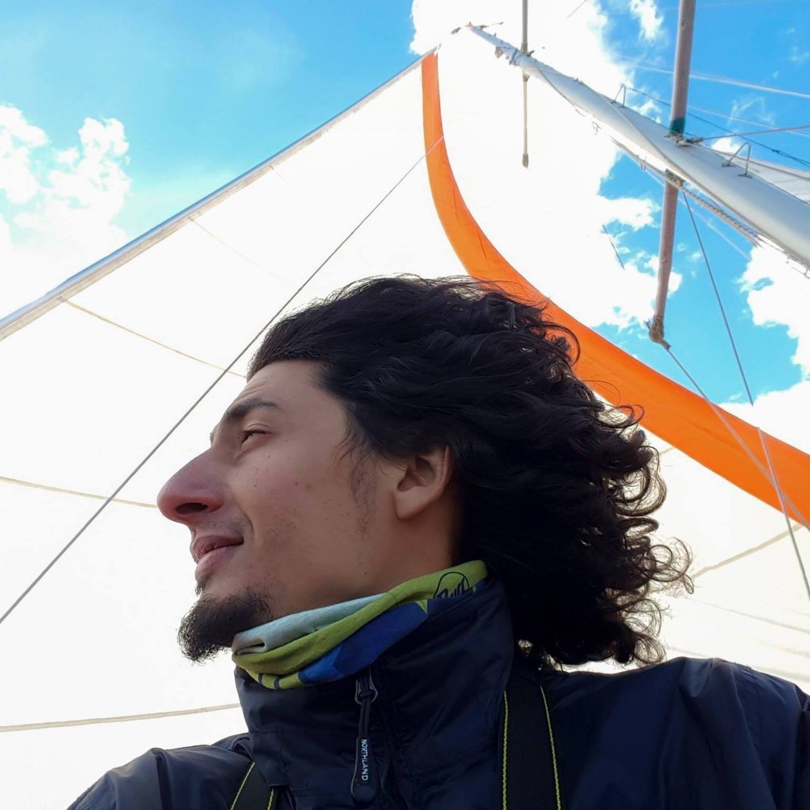

Sus Orígenes
Leo nació el 20 de agosto de 1986 en Hurlingham, una localidad en la provincia de Buenos Aires.
Su Infancia
Tuvo una infancia feliz, con reglas bien establecidas por sus padres, pero impulsada por su curiosidad natural, que siempre fue alentada por sus seres cercanos.
Un aspecto muy significativo fue la pasión por las aves, un interés que despertó en el su abuelo. Vivió en Hurlingham durante su niñez y adolescencia hasta los 27 años, cuando decidió mudarse a la Capital Federal para continuar su camino.
La influencia de sus estudios en su carrera profesional
Tras un proyecto en la secundaria sobre un estacionamiento, decidió estudiar Ingeniería en Sistemas en la UTN. La experiencia universitaria y todo lo que conlleva le permitió formar su personalidad y creatividad, aspectos que hoy son esenciales en su carrera como desarrollador de software.
¿Cuáles fueron los momentos más desafiantes de su vida y cómo los superó?
Uno de los desafíos más grandes fue sentir que la carrera que estaba estudiando no era para él, pero logró superarlo gracias al apoyo de incondicional de su familia.
Otro momento desafiante fue decidir cómo construir su casa, algo que trabajo junto a su pareja.
Por último y no por eso menos importante, un gran desafío fue mantener sanamente una relación de pareja a distancia durante seis años, desafío que lograron superar con confianza mutua.
Logros importantes de su vida
Haber terminado sus estudios universitarios es un logro que valora mucho, así como también está muy orgulloso de haber logrado construir su propia casa, haciéndola sustentable y con sus propias manos.
Hobbies y pasiones
- La Electrónica fue su primera pasión, guiada por la intriga, la astucia y la dedicación a resolver problemas.
- La Apicultura es otra, pues lo acerca al objetivo de convivir más con la naturaleza. Las abejas juegan un rol fundamental en la polinización, y además, puede aplicar su creatividad e inventiva para mejorar su supervivencia en su entorno.
- También le apasiona hacer Panificados con masa madre; le intrigaba la complejidad del proceso y la capacidad de enfrentar las frustraciones. Esta pasión lo llevó incluso a abrir una panadería con amigos. Pueden explorar su hermoso canal de YouTube Fuerza Natural Pan
Practicar Artes Marciales es otro de sus grandes intereses, ya que disfruta del movimiento corporal y le ha permitido conocerce en otros aspectos de su vida.
Sus metas a futuro
Una de sus metas es terminar de asentarse en su nuevo hogar en Colonia, Uruguay
También quiere Crear un bosque en su terreno, donde le sea posible plantar yerba mate, pero también disfrutar del proceso. Para lograrlo, está construyendo un ecosistema, plantando árboles, criando abejas y reutilizando los desperdicios de la casa para este fin.
Por supuesto viajar siempre está presente!!!!
